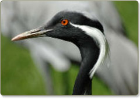
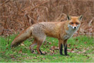

Новости
Новостной заголовок
Список природоохранных объектов (парков, памятников природы, заказников) Одесской области пополнится.
Подробнее...Новостной заголовок
Список природоохранных объектов (парков, памятников природы, заказников) Одесской области пополнится.
Подробнее...Анонсы событий
А знаете ли вы?
Журавель -красавка
Красавок также надо охранять как памятник природы; правда, очень мало шансов на то, что эта птица когда-либо приспособится к изменившимся условиям внешней среды и начнет размножаться, заселяя новые территории.
Подробнее...Заголовок
Подзаголовок
Основная цель проекта для которого разрабатывается сайт: Восстановление деградированных степных участков на территории Луганской и Одесской областей, Ар Крым и в Молдове, сохранение биоразнообразия на этих степных территориях. Ведение экстенсивного животноводства на степных пастбищах, восстановление деградированных пастбищ (степных), адаптация к климатическим изменениям на этих территориях; расширение границ уже существующих и создание новых объектов природно-заповедного фонда (заповедники и т.д.). Основная цель проекта для которого разрабатывается сайт: Восстановление деградированных степных участков на территории Луганской и Одесской областей, Ар Крым и в Молдове, сохранение биоразнообразия на этих степных территориях. Важное слово в тексте Ведение экстенсивного животноводства на степных пастбищах, восстановление деградированных пастбищ (степных), адаптация к климатическим изменениям на этих территориях; расширение границ уже существующих и создание новых объектов природно-заповедного фонда (заповедники и т.д.)
- Вид списка:
- Praesent commodo scelerisque orci, id egestas nunc faucibus et.
- Suspendisse sit amet arcu tincidunt tellus laoreet rhoncus.
- Curabitur egestas venenatis felis, non semper leo rhoncus id.
- Vivamus mollis auctor urna, sed vehicula tellus facilisis vel.
Если вы до сих пор не бывали в степи, тогда вам стоит там побывать. Супер важное предложение в тексте. Выбирайте маршрут весной, если хотите насладиться цветением тюльпанов и пионов, летом – если вас интересуют лекарственные растения, осенью – если есть желание совершить конную прогулку, зимой – если хотите попробовать себя в роли пастуха; и в любое время года, если хотите больше узнать о том, насколько ценны степные территории для социально-экономического и культурного развития своих территорий и государств, которые они представляют.Ссылка в тексте
Подзаголовок
Основная цель проекта для которого разрабатывается сайт:
Восстановление деградированных степных участков на территории Луганской и Одесской областей, Ар Крым и в Молдове, сохранение биоразнообразия на этих степных территориях. Ведение экстенсивного животноводства на степных пастбищах существующих и создание новых объектов природно-заповедного фонда (заповедники и т.д.). Основная цель проекта для которого разрабатывается сайт: Восстановление деградированных степных участков на территории Луганской и Одесской областей, Ар Крым и в Молдове, сохранение биоразнообразия на этих степных территориях.
Ведение экстенсивного животноводства на степных пастбищах, восстановление деградированных пастбищ (степных), адаптация к климатическим изменениям на этих территориях; расширение границ уже существующих и создание новых объектов природно-заповедного фонда (заповедники и т.д.)